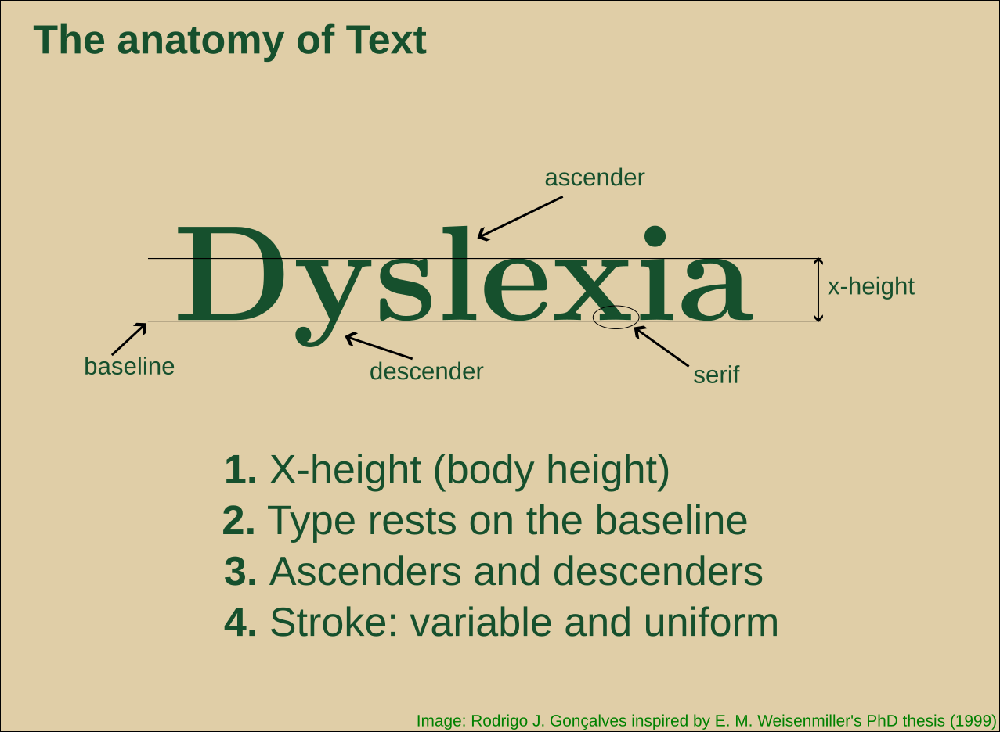

Fonts and dyslexia
Dyslexia and fonts

I am not an expert in accessibility or cognitive challenges in communication/education, but I am concerned to give my students all (best) available options so they can make the most of my presentations. I have had a few students with dyslexia, and I spent quite a while researching the best font for dyslexia.
I was looking for a ‘simple’ answer. After all, I can almost safely think “for colorblind audience, choose/generate a palette using color brewer (python/maps)”. Why not expect “for dyslexic audience, use X font”.
I found that the answer is not straightforward, and basically, no font is more ‘dyslexia-friendly’ than any other per se. At least that claim is not supported by evidence, and there is no consensus on it.
Whenever possible I try to use the Atkinson Hyperlegible® font from the Braille Institute, which is “designed to improve legibility and readability for individuals with low vision”, and “feature clear, highly distinctive letters and numbers that make reading easier and more accessible.” However, I admit that I also have no scientific evidence at hand that it outperforms other fonts (I don’t say it doesn’t exist). But they show some of the details and it makes sense. But it doesn’t claim to be best or even different regarding dyslexic readers.
![Four images, each one compares specific letters of the Atkinson Hyperlegible font. 1) comparison of 'B' vs '8', and 'O' vs '0', showing that they are easily distinguishable using this font. 2) comparison of characters '1', 'I', 'i', 'l' showin they're also distinguishable (not so easy to distinguish in other fonts). 3) Comparison of 'p' vs 'q' showing theyr also easily distinguishable. 4) Show of 'open counters' (i.e. large areas inside letters) for example in letters 'e', 'b', 'g', and 's' to make them clear.](BrailleInstitute.png)
I am aware that the ‘dyslexia friendly’ font is offered in numerous places across the internet. Even Claude has a ‘dyslexia friendly’ font, but it is more related to marketing1 than to an evidence-based feature (after some back-and-forth, it ended up admitting it).
To sum up, the consensus is closer to “let the person choose fonts and spacing” than “the font X is best for dyslexia”. In the end, the most effective approach is to empower users with choices. This is what specialists and organizations recommend (see below).
For my Quarto@revealjs presentations, I will be using the a11y extension by Mickaël Canouil (an incredibly helpful and prolific Quarto contributor!). This extension lets the user chose almost all aspects of the visible content (and even sound!). The most important for dyslexic readers are probably font type and the different spacing options and color combinations. As far as I understand, letting each person chose the visual style and aspect is the best one can do to effectively communicate to a broad audience.
Some resources
International Dyslexia Association (USA)
Dyslexia Canada
DyslexiaHelp (Univ. of Michigan, USA)
Readability tutor
Understood
Scientific research
- Letter spacing improves reading
- Dyslexie font does not benefit reading in children with or without dyslexia
Footnotes
I’m not aware that anyone makes money with this, but I didn’t find a better word↩︎